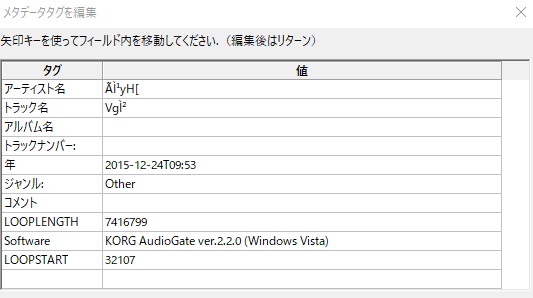

RPGツクールMV AudacityのバグでBGMがループしなかった話
タイトルどおり、Audacityで出力したoggファイルをBGMとして流したところ、ループタグが効かなかった話
何が起きた？
RPGツクールMVでは、.ogg形式のファイルをBGMとして使用することができます。
（最新のNW.jsとトリアコンタンさんのプラグインがあれば.mp3も利用できるようです）
oggのメタデータに専用のループタグを設定することで、BGMを最後まで演奏せずに途中からループ再生させることができます。
一旦BGMがフェードアウトして２周目が始まると、なんとも言えないダサさがあるので、それを回避したい場合にはしっかり設定しておきたいタグです。
公開されているBGM素材の中には、製作者の方が最初からツクールを意識してループタグを仕込んでくれている場合もあります。
そうでない場合、Audacityなどのツールを用いて自分でタグを仕込む必要があります。
参考：RPGツクールのBGMの使用について【oggファイルを使ったループ処理】 - ゲーム音楽の巣
ところが筆者は、ちゃんとLOOPSTART, LOOPLENGTHの２種のタグを仕込んでもループされず、最後まで演奏してLOOPSTARTに戻ってしまう、という現象に直面していました。
メタデータのセグメントが大きい？
ツクールMVでoggを読み込んだとき、以下の条件でループタグが機能しないことがあるようです。
— 白 (@white_mns) 2018年6月14日
・メタデータ(ループ位置やアーティスト名など)の合計が半角255文字以上
・LOOPLENGTH、LOOPSTARTの記述位置がメタデータの中で後ろの方に記述される(記述位置はoggを出力したソフト次第？) #ツクールMV
これか！ と思い、対策プログラムをプラグインとして組み込んでみたものの、解決せず。
メタデータはちゃんと読めてる？
まずここを確認すべきでした。
音楽ファイルにループタグがついているかチェックするプラグイン - ツクマテを利用して、読み込んだBGMのループタグがどうなっているか確認しました。

なんかアーティスト名とか化けてますが、これを直しても効果はなし。
おわかりいただけただろうか。
なんか！ LOOPLENGTHの末尾に！ 1ってついてる！！
数値上、一桁ズレてしまっています。これでは目的の位置でループしないわけですね。
その後、いろいろ触った結果、メタデータのLOOPLENGTHとLOOPSTARTの間に、キーと値合わせて48文字以上のタグが設定されていた場合に、末尾に（その文字数-48）の値が追加されることがわかりました。
ツクールのバグ？
他の音声編集ツールで読み込んだ際には、末尾になにか追加されるなんてことは起きませんでした。
なのでツクールのoggのメタデータのパースがなにかおかしいのでは、という感じはします。
しかし、Audacityで一度出力したoggを、Mp3Tagで改めて保存し直したら正常な値に戻りました。
ツクールが正しくメタデータを読んでくれないケースがあるのは事実ですが、これはAudacity側もなんかこう、やんちゃなことをしているのでは？という気配が漂ってきたわけです。
Audacityのバージョンアップで解決
もしやと思い、Audacityのバージョンを上げてみました。
筆者が使用していたのは2.1.3。去年の3月リリースなので、極端に古いというわけではなさそうです。
しかし、2.3.0がつい先日（9/29）にリリースされており、せっかくだからとバージョンアップに追従してみました。
新しいバージョンで出力した.oggは、ツクールでもしっかりメタデータを読み込めました。
2.3.0で修正されたバグリストの中にWindows: Metadata Editor: Order of custom fields changed on save.
とあるので、おそらくこの辺で解決されたんじゃないかなーと思っています。